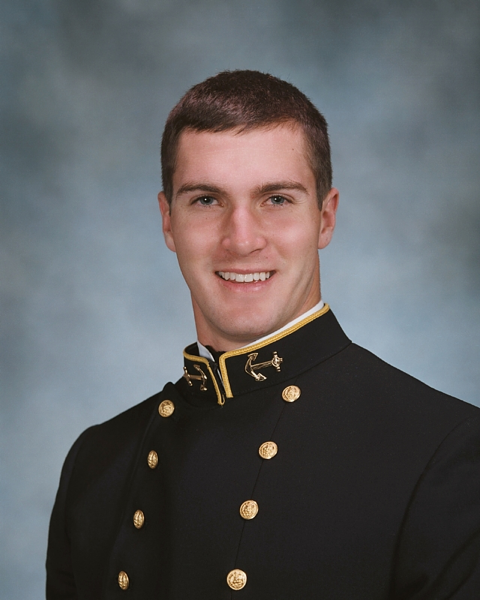
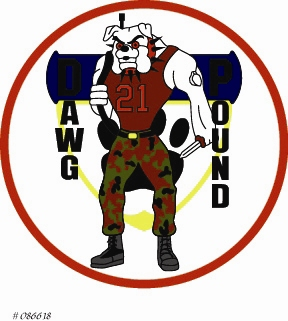
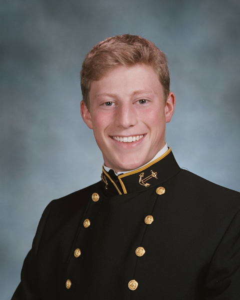
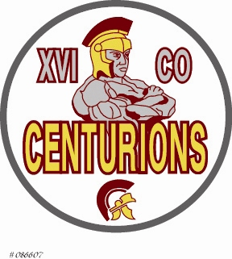

Patrick T. Wayland
2ND LIEUTENANT · UNITED STATES MARINE CORPS

21ST COMPANY · DAWG POUNDPatrick Trevor Wayland grew up in Midland, Texas, where he was a standout at Midland High School — varsity football and basketball, academic letterman, National Honor Society. He was shaped equally by athletics and faith, participating every spring break in mission trips to build homes in Juárez, Mexico.
After a year at Texas Tech, he received a Congressional nomination to the Naval Academy, where he graduated in May 2010 with honors in Economics. He was commissioned as a Second Lieutenant in the United States Marine Corps, served as Company Commander of 21st Company during his senior year, and earned a reputation as someone others wanted to follow.
He completed The Basic School at Quantico and reported to Pensacola for Aviation Pre-flight Indoctrination — he was in his second week of API training when he suffered a cardiac event during a swim evolution on August 1, 2011. He was pronounced brain dead on August 6. He was 24 years old.
True to the character he had shown his whole life, Patrick had registered as an organ donor. In the hours after his death, his kidney was matched to Sergeant Jacob Chadwick — a Marine stationed at Camp Pendleton who had been on dialysis for years. In death, Patrick gave a fellow Marine a second chance at life.
B.S. Economics, With Honors · Organ Donor

William B. McIlvaine III
LIEUTENANT (J.G.) · UNITED STATES NAVY

16TH COMPANY · CENTURIONSWilliam McIlvaine III was, by every account, a Renaissance man — equally at home in a chemistry lab, a bagpipe circle, or a cockpit. He grew up in El Paso and arrived at the Naval Academy with a dream of flying. Though his eyesight kept him from the pilot's seat, he channeled that same drive into becoming a Naval Flight Officer.
At the Academy he majored in Chemistry, graduated with merit in May 2010, and received both the Music Prize and the Chemistry Prize at graduation. For all four years he played in and eventually directed the Pipes and Drums — a group he led on tours across the country. He sang in the Protestant Choir during plebe summer and the Men's Glee Club during plebe year.
He earned his NFO wings at NAS Pensacola in May 2012 and chose EA-6B Prowlers, joining VAQ-129 — the Fleet Replacement Squadron at NAS Whidbey Island — in June 2012. On March 11, 2013, the EA-6B Prowler he was aboard crashed during a low-level training mission. Three Naval Academy graduates were killed in the accident: Lieutenant Commander Alan Patterson '00, Lieutenant Valerie Delaney '09, and William. He was 24 years old.
He was buried at the Naval Academy Cemetery in Annapolis.
B.S. Chemistry, With Merit · Naval Academy Cemetery
"Greater love hath no man than this, that a man lay down his life for his friends."
JOHN 15:13
← Back to The Yard